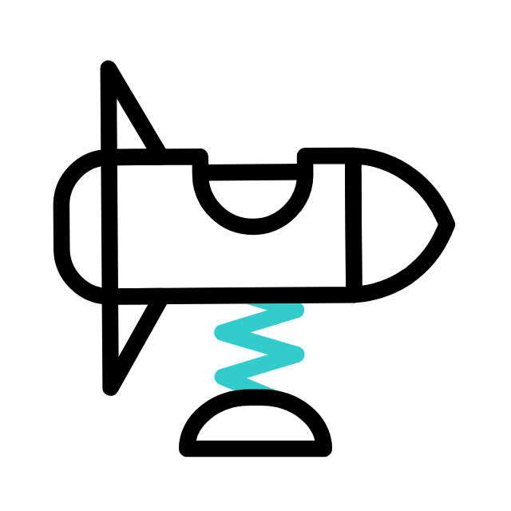

Programozás
2023 elején kedztem el komolyabban programozni, és már rengeteg technológiával megismerkedtem: JavaScript, HTML, CSS, Sass, Node.js, Unit testing - és ez a lista csak hosszabb lesz!
2023 elején kedztem el komolyabban programozni, és már rengeteg technológiával megismerkedtem: JavaScript, HTML, CSS, Sass, Node.js, Unit testing - és ez a lista csak hosszabb lesz!

Egyre magabiztosabban kezelem az alapvető Adobe grafikai szoftvereket (Photoshop, Illustrator, InDesign), miközben a Canva és Figma felületein is könnyen elboldogulok.
Legyen az kreatív tervezés, vagy kalapálós munka, lelkiismeretesen és lelkesedve vágok bele egy projektbe, amiből igyekszem a maximumot kihozni. Nem félek új dolgokat tanulni, szeretek kísérletezni.
Korábbi tapasztalataimat hasznosítva szeretnék egy olyan csapatban dolgozni, ahol a feladatok sokszínűsége és a kihívások megfűszerezik a mindennapokat, ahol a munkaadóm megbecsüli az emberi kapcsolatokat, partnerként szólítja meg a munkatársait, és konstruktív párbeszédekkel tekinthetünk együtt a kihívásokra.
